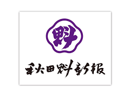
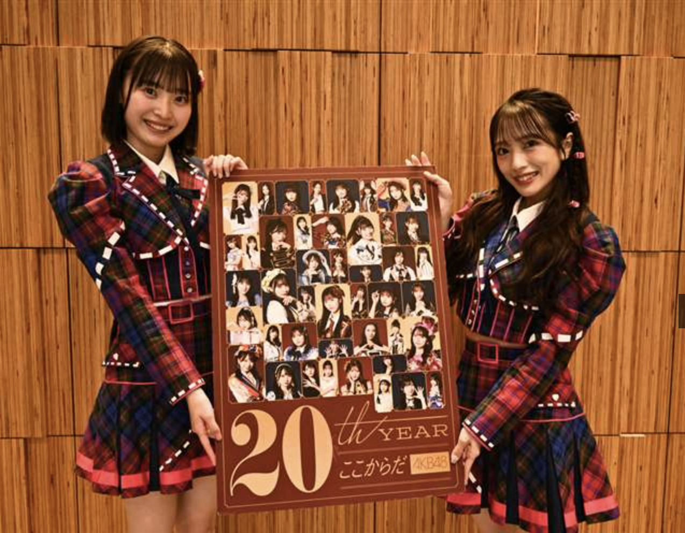
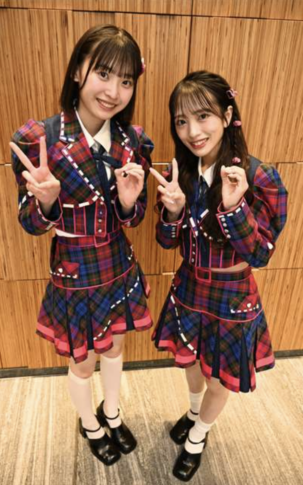
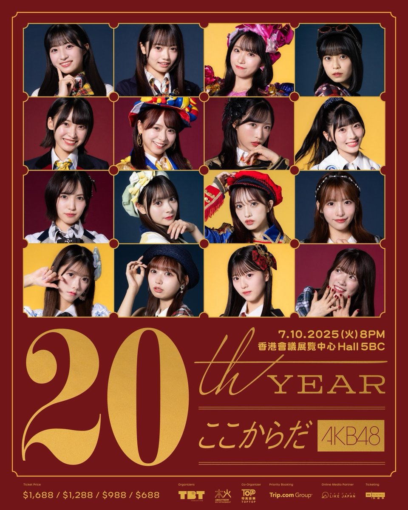
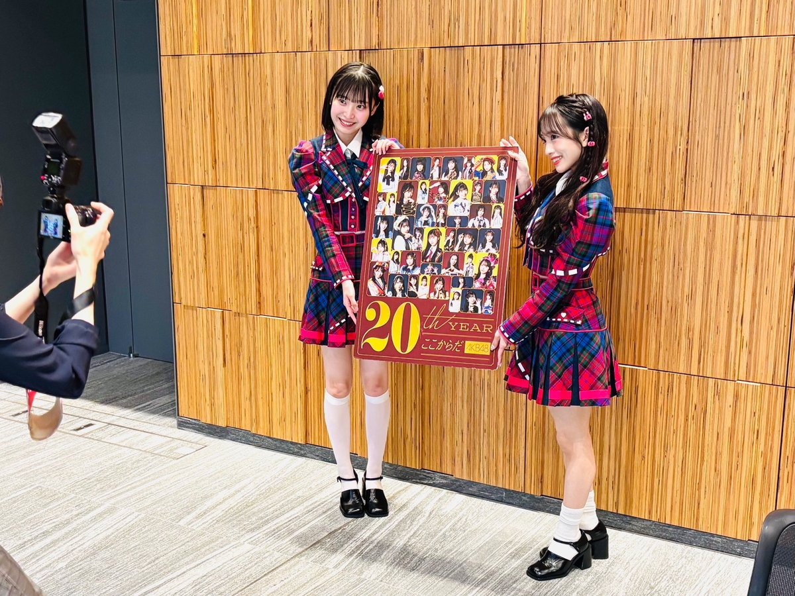
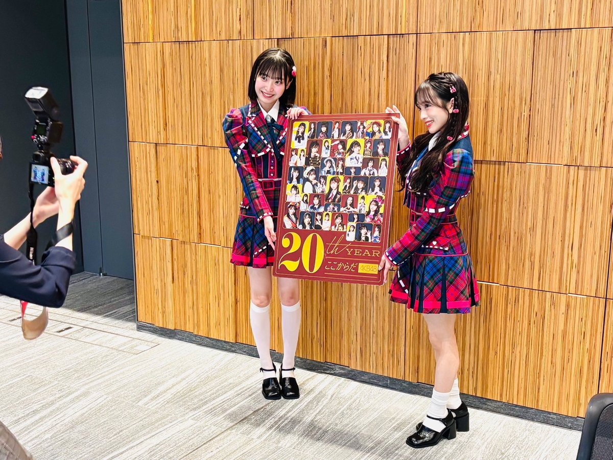

AKB48 データー（姉妹サイト）
このサイトの姉妹サイトができました。まだまだ、工事中が多いのですが、AKB48 20周年を祝して制作中です。よければ、姉妹サイトも応援もよろしくお願いします。
潟上市 柱の会
郵便番号：010-0201 秋田県潟上市天王字上江川47-398 電話：018-878-4111

【日程】
2024年10月4日（金） 開場16:30 開演17:30 終演19:30（予定）
このサイトの姉妹サイトができました。まだまだ、工事中が多いのですが、AKB48 20周年を祝して制作中です。よければ、姉妹サイトも応援もよろしくお願いします。
「かたりあん」の駐車場の情報がないが、上空から見ると、約１００台位のスペースがあるようだ。
当日、関係者等で１０台以上が削られそうなので、８０台位と見たほうが良いかも？
JR二田駅からは、450ｍで徒歩約6分である。
多目的ホール
・座席４２０席（１階３５０席、２階７０席）
［１階（1列35席＝左10席・中央15席・右10席）☓10列、２階（1列35席☓2列）］
・パイプ椅子にすれば約６００席作れますが、それはないでしょう。たぶん。
楽屋
１６人のメンバーが来るのに椅子が8つ。それに狭い。当然、他の研修室等を開放しますよね？
当日は、ランダムにて、本人確認が行われます。「当選者」と「来場者」が、同一である事が確認できない場合や、転売や譲渡等が発覚した場合、入場できません。
「顔写真付き本人確認書類」は、以下の１〜7であれば１点で確認できます
１から7をお持ちでない場合は、名前が印字されている下記、公的証明書のいずれか２点での確認も可能
※上記の名前が印字されている(A)～(F)の公的証明書の2点目が用意できない場合、以下の名前が印字されている証明書・カード類でも可とします。
例）社員証、顔写真の無い学生証、クレジットカード、キャッシュカード、診察券
（これらの証明書・カード類のみでは不可となります）
※公共料金（電気、水道など）請求書や各種郵便物の類は、名前が印字されたものであっても不可となります。


当日は、岩立沙穂さんの30歳の誕生日です。大いに盛り上げましょう。
岩立沙穂さんのキャッチフレーズは、特に有名ですね。
『皆さん発声練習始めます！（やっほー！）は〜や〜い♪私に続いて言ってください！
やっほー！（やっほー！）さっほー！（さっほーーー！）な〜が〜い♪
さっほーこと岩立沙穂です。』
［趣味］駅弁を食べること、駅弁の掛け紙収集（200枚以上）
AKB48 岩立沙穂さんのお誕生日を祝しまして、岩立沙穂さんの生誕祭委員の方々（岩立沙穂記念企画コミュニティ）が応援広告を掲出します📢
是非、この機会に見てみましょう。※詳細は、画像を参照
＜秋田エリア＞
📍JR「秋田」駅（駅広告）
📍JR男鹿線 車両（中吊り広告）
＜東京エリア＞
📍東京メトロ 日比谷線「秋葉原」駅
男鹿線は、「男鹿なまはげライン」と呼ばれています。追分駅から男鹿までは、架線が整備されていないため、蓄電池で走ります。赤と青の２両編成で、赤鬼、青鬼として親しまれています。
男鹿線の車内中吊り広告です。期間限定の広告ですので、是非、その目で！！
駅広告は、場所が分かりにくいので、メトロポリタン口から出入りしましょう。メトロポリタン口のすぐそばにあります。中央改札口から乗ると、駅構内図の通り、広告の場所が分かりづらくなります。
以下が込山榛香さんのコメントです。
込山榛香はAKB48を卒業します。
13歳の時にAKB48に加入してもう11年が経ちました。
この11年の中で、選抜メンバーに選んでいただいたり、AKB48選抜総選挙ではファンのみなさんのおかげで3回ランクインさせてもらい秋元先生からセンター曲をいただくこともできました。じゃんけん大会でも3位になり、チームKのキャプテンも経験させていただいて、そしてもうすぐSHOWROOMでの毎日配信が1000日になります！
AKB48での活動は全てやり切ったなと思います。
アイドル人生、楽しみつくしました！
チームKキャプテンの役割が終わってからは〈自分の将来〉を考える時間が増えて、たくさんの経験をさせていただきながら次の道へ進む決心がついたのですごく嬉しいです。
そして、私を成長させてくれたこの今の劇場で卒業を発表させていただきました。
卒業は半年後の2月頃を予定しています。
私は舞台だったり自分のお仕事も頑張ってきましたが、なかなかアイドルの姿をお見せすることができなくて申し訳ないとずっと思っていたので、卒業は少し先になりますが、残り半年間たくさんアイドルとしての姿をお届けして、ファンのみなさんに恩返しできるように頑張ります！
そしてこれからももっともっと輝けるように頑張りますので、応援よろしくお願いします！
込山榛香
〜出張公演スペシャルバージョン〜
（M C 募集されたお題に沿って自己紹介）
劇場公演と同じように出張公演でもMCのテーマを募集しています。
応募方法は①②を書いてXにポストするだけ📮💭
①ハッシュタグ #AKB48劇場質問箱
②MCで話してほしいテーマ
あるいは、②10月4日の秋田公演 ③MCで話してほしいテーマ
当日、採用されるといいですね。
（ユニット）
（M C）
(ここから全メンバー)
(出張公演スペシャルバージョン〜名曲メドレー３曲)
（短い M C）
（短い M C）
(アンコール後)
（短い M C）
（最後の挨拶）
MIX（ミックス）とは、アイドルのライブにおいて、前奏や間奏にファンが叫ぶ掛け声のことで、気持ちの高まりからくる叫びをまぜたことからMIXと呼ばれています。
MIXの極意は「 虎 の如く 火 の如く 人 の 造 らざる 繊 細な心も 維 新となれば 海 を飲み 女 を喰らふ。その 振動 を心の有るがままに 化 身し本来 繊 細な心を 飛 ばし刹那に思ふがまま 除 き 去 る。これ己に忠実。刹那な刻の流れに身を任せるのみ。これこそタカまりの心髄なり。」とされ、色字をつなげたものがMIXの内容とされています。
日本語
虎！火！人造！繊維！海女！振動！化繊飛除去！
英語
タイガー！ファイヤー！サイバー！ファイバー！ダイバー！バイバー！ジャージャー！
アイヌ語
チャペ！アペ！カラ！キナ！ララ！トゥスケ！ミョーホントゥスケ！
9月2日（月）〜 10月31日（木）AKB48劇場リニューアル工事にともない全国を廻る「AKB48劇場工事中出張公演」全20公演を「VR SQUARE」にて独占アーカイブ配信することが決定いたしました！！


AKB48劇場工事中出張公演のオリジナルグッズは、AKB48劇場工事中出張公演 Tシャツ￥3,500 (税込)とAKB48劇場工事中出張公演 フェイスタオル￥2,000 (税込)の２点です。現地販売がないので、欲しい方は、AKB48 Official Shopにてご購入ください。売り切れの場合もあります。


10月5日、AKB48のメンバー、佐藤綺星さん、徳永羚海さん、長友彩海さんが潟上市役所を訪問。会見を行った。
佐藤「潟上市で公演できるのはすごくうれしいです。初めて見に来る人にも楽しんでもらえるように盛り上げたいです。」
徳永「AKB48を知らない方にも楽しんでもらい、『推し』を見つけてほしいです。」
長友「汗をかき、髪型を崩しながらも歌って踊る姿を見て、元気や勇気をもらってほしいです。」
また、竿燈のイベントを行っていたアゴラ広場（秋田駅前）にも登場し、しっかりPRしました。
AKB48 21st member audition
◯応募期間 2025年5月5日(月)21:00〜2025年6月29日(日)23:59
3つの応募方法 ・WEB応募 ・LINE応募 ・カラオケ応募
◯1次審査
2025年7月9日(水)までに通過者の方のみへのご連絡を予定しております。
◯2次審査(面談審査)
福岡：2025年7月19日(土)
広島：2025年7月19日(土)
大阪：2025年7月20日(日)
名古屋：2025年7月21日(月・祝)
秋田：2025年7月26日(土)
仙台：2025年7月27日(日)
石川：2025年8月2日(土)
札幌：2025年8月3日(日)
東京：2025年8月9日(土)、10日(日)
◯3次審査(歌唱ダンス審査)
2025年8月23日(土) 都内予定
【6/20 金曜 #あさ採りワイド秋田便 】 10:35ころ～スタジオゲスト 向井地美音さんと坂川陽香さんにご出演いただきました♪ オーディションのお話はもちろん、アイドルになった理由、これから挑戦する人へのメッセージも！ エンディングには『まさかの』事態が… (ABSラジオのXより)
【6／20金曜 #エキマイク】 向井地美音さんと坂川陽香さんにお越しいただき、AKB48第21期生オーディションについてお話を伺いました。
【6／21土曜 #AKT秋田テレビ「土曜の情報缶詰 どっかん」】
AKB48第21期生オーディションについて、インタビュー。
【6／22日曜 #AAB秋田朝日放送「トレタテ！サンデー」】
AKB48第21期生オーディションについて、インタビュー。




今年結成２０周年を迎えるアイドルグループ「ＡＫＢ４８」が２９日まで、２１期生オーディションの参加者を募っている。書類・動画選考を経て７～８月に行う２次審査（面談）は、初開催の秋田県を含む全国９都道府県で実施する。ＰＲのため２０日、秋田市を訪れたメンバーの向井地美音（みおん）（２７）と坂川陽香（ひゆか）（１８）に、夢をつかむために必要なことや本県の印象などを聞いた。
―参加の心構えは。
向井地 部活に打ち込んだり、自由に放課後を楽しんだりする１０代ならではの経験はできなくなるかも。気合と覚悟は必要かな。世界がガラッと変わるから。大変だけど、それ以上の青春がＡＫＢには詰まっている。メンバー間で競い合い、比べられる側面もあるけれど、みんな仲良し。互いに努力して支え合える仲間が見つかる。
坂川 活動のたびに地元の福井から都内まで通っていた時期がある。学校との両立は大変だったけれど、移動中の新幹線で勉強するなど、できることを自分で考え実行する中で自立し、成長できた。
―ＡＫＢ入りを目指す秋田県の少女たちにメッセージを。
向井地 キャラクターをつくるのではなく、素直ですてきなあなたを出してほしい。自分に自信がなくて不安や緊張でいっぱいなのは当たり前。私もそうだったので、気にせず挑戦して。
坂川 ありのままの方が、今後どう成長していくのかというわくわく感があるし、引かれる。個性を尊重するグループなので自分らしさが武器だし、合格の決め手にもなる気がする。私は持ち味の明るさと笑顔をそのままに挑戦し、ここまできた。
―結成２０周年の節目の年。
向井地 加入して１３年目になり、若手を率いる立場にある。歴代の先輩たちと共演してきた身として、当時と今をつなぐ架け橋になれるといい。８月には全国ツアーが始まる。一致団結し、１２月に最高の記念日を迎えたい。
坂川 トーク力と爆発力で活躍し、グループを盛り上げたい。ＡＫＢは「会いに行けるアイドル」なので、活動拠点の専用劇場やライブで直接元気をもらってほしい。
―２人とも来県は初。
向井地 ぼだっこ弁当がＸ（旧ツイッター）でバズっていてすごく気になる。食べて帰りたい。
坂川 小学校の社会の教科書で、竿燈まつりが紹介されていた。教科書に載るって相当すごい。見てみたい。
―向井地は２０２２年に出演したエフエム秋田のラジオ特番で、オリジナル楽曲「もうすぐ」（ユーチューブで配信中）の歌詞を担当した。
向井地 秋田の皆さんの「優しさ、粘り強さ」から着想し、自分がＡＫＢでの経験や仲間との関わりから得たものを表現した。雪が解けて春が訪れるように、いつか悩みやつらさも解けて（糧になり）新しい自分に出会えるという応援ソング。オーディションがそんな機会になれば。
 

【6／29日曜 #ABS秋田放送「ZIP!SUNDAY」】
『AKB48 秋田で新メンバーオーディション開催』
今年で活動開始から20周年を迎える人気アイドルグループAKB48が新メンバーオーディションを開催。全国9会場で行われる二次審査は、なんと秋田も会場に！
PRで来社した向井地美音さんと坂川陽香さんに、自身のオーディションを振り返ってもらい極意を聞く。
今日は
人生初の秋田県へ！！！
ラジオ生放送→
インタビュー収録→
新聞取材→
ラジオ生放送→
テレビ収録→
インタビュー収録
という
盛りだくさんな1日でした( *´艸`*)
こういう地方プロモーション
本当に久しぶりだった気がするので
楽しかったな～！
ひゆかとも
ぐっと距離が縮まった気がします(OvO)
ぜひチェックしてね( ´ ▽ ` )ノ
（みーおんより。）
2次審査会場のうちのひとつ秋田県でオーディションの告知をさせていただきました！ 第21期生オーディションの締切は6/29 23:59まで 〆
今回のプロモーションが申し込みを迷っている誰かの1歩踏み出す勇気に繋がっていたら嬉しいです！ 私たちと一緒にAKB48を盛り上げていきましょう （ひゆかより）
2013年4月3日（水） 秋田県民会館

1. overture 2. 草原の奇跡 3. スラップ&ビルド 4. 夕陽マリー 5. ウッホウッホホ 6. 嘆きのフィギュア （北原里英、永尾まりや、中田ちさと、松井珠理奈） 7. 純情主義 （松原夏海、宮崎美穂、島田晴香） 8. アボガドじゃね〜し… （大島優子、武藤十夢） 9. Confession （前田亜美、阿部マリア、藤田奈那、鈴木紫帆里） 10. 星の温度 （板野友美） 11. パジャマドライブ （小林香菜、佐藤亜美菜、内田眞由美） 12. 泣ける場所 （秋元才加、倉持明日香、近野莉菜） 13. ツアーの女神 14. シャムネコ 15. 小池 16. 走れペンギン 17. 会いたかった 18. ギンガムチェック 19. UZA 20. RIVER アンコール 21. 向日葵 （野中美郷） 22. ヘビーローテーション 23. ファースト・ラビット 24. 掌が語ること 25. GIVE ME FIVE 26. To be continued.
1回目 2017年11月25日（土）秋田県民会館
坂口渚沙（北海道）／横山結衣（青森県）／谷川聖（秋田県）／佐藤七海（岩手県）／早坂つむぎ（山形県）／佐藤朱（宮城県）／舞木香純（福島県）／本田仁美（栃木県）／小栗有以（東京都）／横道侑里（静岡県）／橋本陽菜（富山県）／平野ひかる（石川県）／中野郁海（鳥取県）／廣瀬なつき（高知県）／倉野尾成美（熊本県）／下青木香鈴（鹿児島県）
その夜公演では、センターである秋田県代表・谷川聖が体調不良のため途中退場を余儀なくされ、残ったメンバーが持ち前のチームワークで続行するも、出演メンバー全員が揃っての終演は叶わない結果となった。
2回目 2018年 1月28日（日）秋田県民会館
多くの方々からの応援の声を受けて、リベンジ公演が実現！ 同じ会場で、再びコンサートが開催されました。


▷昼公演 坂口渚沙（北海道）／横山結衣（青森県）／谷川聖（秋田県）／早坂つむぎ（山形県）／佐藤朱（宮城県）／舞木香純（福島県）／本田仁美（栃木県）／佐藤栞（新潟県）／横道侑里（静岡県）／橋本陽菜（富山県）／平野ひかる（石川県）／中野郁海（鳥取県）／人見古都音（岡山県）／下尾みう（山口県）／廣瀬なつき（高知県）／下青木香鈴（鹿児島県）
▷夜公演 坂口渚沙（北海道）／横山結衣（青森県）／谷川聖（秋田県）／佐藤七海（岩手県）／早坂つむぎ（山形県）／佐藤朱（宮城県）／舞木香純（福島県）／本田仁美（栃木県）／佐藤栞（新潟県）／横道侑里（静岡県）／橋本陽菜（富山県）／平野ひかる（石川県）／中野郁海（鳥取県）／人見古都音（岡山県）／廣瀬なつき（高知県）／下青木香鈴（鹿児島県） ＋お手伝いメンバー（下尾みう） ※昼公演と夜公演では一部メンバーが変わります。
◯野蛮な求愛（横山結衣／谷川聖／本田仁美／佐藤栞／横道侑里／中野郁海／下尾みう／下青木香鈴） ◯カフカとでんでんむChu ! （坂口渚沙／横山結衣／谷川聖／佐藤七海／早坂つむぎ／佐藤朱／舞木香純） Overture ※昼公演のみ『リスケ』（横山結衣／谷川聖）披露 ［1］Don't look back！ ［2］ポニーテールとシュシュ ［3］青くさいロック ［4］挨拶から始めよう ［5］一生の間に何人と出逢えるのだろう ［6］僕はいない ［7］昼：大声ダイヤモンド／夜：言い訳Maybe ［8］思春期のアドレナリン ［9］制服の羽根 ［10］昼：セブンスコード（谷川聖）／夜：夜風の仕業（谷川聖） ［11］ラスベガスで結婚しよう(坂口渚沙／人見古都音／下尾みう ※夜公演では下尾みうに代わって佐藤七海) ［12］最初の愛の物語(佐藤朱／舞木香純／廣瀬なつき) ［13］月の裏側(横山結衣／本田仁美／横道侑里／中野郁海) ［14］虹の作り方(早坂つむぎ／佐藤栞／橋本陽菜／平野ひかる／下青木香鈴) ［15］1994年の雷鳴(坂口渚沙／横山結衣／谷川聖／佐藤朱／舞木香純)／誕生日TANGO（横山結衣／谷川聖／佐藤七海） ［16］ウィンクの銃弾 ［17］アクシデント中 ［18］星空を君に ［19］夢へのルート ［20］靴紐の結び方 ［21］生きることに熱狂を！ アンコール ［22］昼：前しか向かねえ／夜：Dreamin' girls ［23］ひこうき雲 ［24］恋する充電プリウス 〜恋するフォーチュンクッキー2〜 ［25］昼：365日の紙飛行機（キーボード：下青木香鈴）／夜：夕陽を見ているか？（キーボード：下青木香鈴） ［26］47の素敵な街へ
週替りでオリジナル公演の中から１曲を選曲し、劇場公演の最後に披露するものです。（５月１０日〜８月３１日まで実施）なんとそこにサプライズゲストが登場しました。

【AKB48グループから排除or活動終了】